Transformer Feed-Forward Layers Are Key-Value Memories
Mor Geva1_,2 Roei Schuster1,3 Jonathan Berant1,_2 Omer Levy1 1Blavatnik School of Computer Science, Tel-Aviv University
2Allen Institute for Artificial Intelligence
3Cornell Tech
{morgeva@mail,joberant@cs,levyomer@cs}.tau.ac.il, rs864@cornell.edu
Abstract
Feed-forward layers constitute two-thirds of a transformer model’s parameters, yet their role in the network remains under-explored. We show that feed-forward layers in transformerbased language models operate as key-value memories, where each key correlates with textual patterns in the training examples, and each value induces a distribution over the output vocabulary. Our experiments show that the learned patterns are human-interpretable, and that lower layers tend to capture shallow patterns, while upper layers learn more semantic ones. The values complement the keys’ input patterns by inducing output distributions that concentrate probability mass on tokens likely to appear immediately after each pattern, particularly in the upper layers. Finally, we demonstrate that the output of a feed-forward layer is a composition of its memories, which is subsequently refined throughout the model’s layers via residual connections to produce the final output distribution.
1 Introduction
Transformer-based language models (Vaswani et al., 2017) are at the core of state-of-the-art natural language processing (Devlin et al., 2019; Brown et al., 2020), largely due to the success of selfattention. While much literature has been devoted to analyzing the function of self-attention layers (Voita et al., 2019; Clark et al., 2019; Vig and Belinkov, 2019), they account for only a third of a typical transformer’s parameters (4 d2 per layer, where d is the model’s hidden dimension). Most of the parameter budget is spent on position-wise feedforward layers (8 d2 per layer), yet their role remains under-explored. What, if so, is the function of feed-forward layers in a transformer language model?
We show that feed-forward layers emulate neural memories (Sukhbaatar et al., 2015), where the first
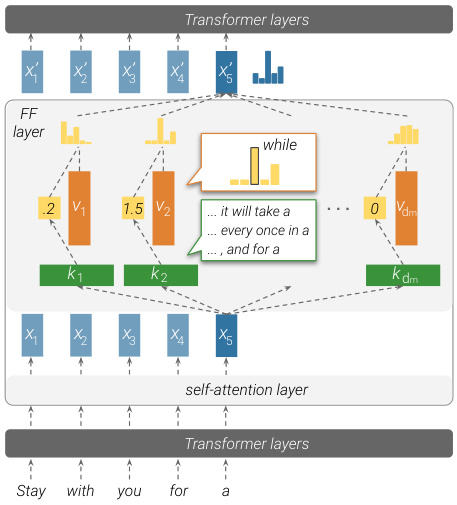
Transformer layers
x’ x’ x’ x’ x’
1 2 3 4 5
FF
layer
while
.2 v 1 1.5 v 2 ... it will take a 0 v dm
... every once in a
... , and for a
k 1 k 2 k dm
x x x x x
1 2 3 4 5
self-attention layer
Transformer layers
Stay with you for a
Figure 1: An illustration of how a feed-forward layer emulates a key-value memory. Input vectors (here, x 5) are multiplied by keys to produce memory coefficients (e.g., the memory coefficient for v 1 is 0 . 2), which then weigh distributions over the output vocabulary, stored in the values . The feed-forward layer’s output is thus the weighted sum of its values.
parameter matrix in the layer corresponds to keys , and the second parameter matrix to values . Figure 1 shows how the keys (first parameter matrix) interact with the input to produce coefficients, which are then used to compute a weighted sum of the values (second parameter matrix) as the output. While the theoretical similarity between feed-forward layers and key-value memories has previously been suggested by Sukhbaatar et al. (2019), we take this observation one step further, and analyze the “memories” that the feed-forward layers store.
We find that each key correlates with a specific set of human-interpretable input patterns, such as n -grams or semantic topics. For example, k 2 in Figure 1 is triggered by inputs that describe a pe-
riod of time and end with “a” . Simultaneously, we observe that each value can induce a distribution over the output vocabulary, and that this distribution correlates with the next-token distribution of the corresponding keys in the upper layers of the model. In the above example, the corresponding value v 2 represents a distribution that puts most of its probability mass on the word “while” .
Lastly, we analyze how the language model, as a whole, composes its final prediction from individual memories. We observe that each layer combines hundreds of active memories, creating a distribution that is qualitatively different from each of its component memories’ values. Meanwhile, the residual connection between layers acts as a refinement mechanism, gently tuning the prediction at each layer while retaining most of the residual’s information.
In conclusion, our work sheds light on the function of feed-forward layers in transformer-based language models. We show that feed-forward layers act as pattern detectors over the input across all layers, and that the final output distribution is gradually constructed in a bottom-up fashion.1
2 Feed-Forward Layers as Unnormalized Key-Value Memories
Feed-forward layers A transformer language model (Vaswani et al., 2017) is made of intertwined self-attention and feed-forward layers. Each feedforward layer is a position-wise function, processing each input vector independently. Let x ∈ Rd be a vector corresponding to some input text prefix. We can express the feed-forward layer FF( · ) as follows (bias terms are omitted):
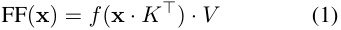
Here, K, V ∈ Rdm×d are parameter matrices, and f is a non-linearity such as ReLU.
Neural memory A neural memory (Sukhbaatar et al., 2015) consists of dm key-value pairs, which we call memories .2 Each key is represented by a d -dimensional vector k i ∈ Rd , and together form the parameter matrix K ∈ Rdm×d ; likewise, we define the value parameters as V ∈ Rdm×d . Given an input vector x ∈ Rd , we compute a distribution
1The code for reproducing our experiments is available at https://github.com/mega002/ff-layers/.
2We use the terms “memory cells” and “memories” interchangeably.
over the keys, and use it to compute the expected value:
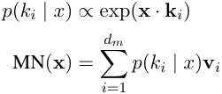
With matrix notation, we arrive at a more compact formulation:
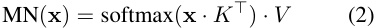
Feed-forward layers emulate neural memory Comparing equations 1 and 2 shows that feedforward layers are almost identical to key-value neural memories; the only difference is that neural memory uses softmax as the non-linearity f ( · ), while the canonical transformer does not use a normalizing function in the feed-forward layer. The hidden dimension dm is essentially the number of memories in the layer, and the activation m = f ( x · K⊤ ), commonly referred to as the hidden layer , is a vector containing an unnormalized non-negative coefficient for each memory. We refer to each m i as the memory coefficient of the i th memory cell.
Sukhbaatar et al. (2019) make an analogous observation, and incorporate the parameters of the feed-forward layers as persistent memory cells in the self-attention layers. While this reparameterization works in practice, the experiment does not tell us much about the role of feed-forward layers in the canonical transformer. If transformer feed-forward layers are indeed key-value memories, then what memories do they store?
We conjecture that each key vector k i captures a particular pattern (or set of patterns) in the input sequence (Section 3), and that its corresponding value vector v i represents the distribution of tokens that follows said pattern (Section 4).
3 Keys Capture Input Patterns
We posit that the key vectors K in feed-forward layers act as pattern detectors over the input sequence, where each individual key vector k i corresponds to a specific pattern over the input prefix x 1 , . . . , xj . To test our claim, we analyze the keys of a trained language model’s feed-forward layers. We first retrieve the training examples (prefixes of a sentence) most associated with a given key, that is, the input texts where the memory coefficient is highest. We
| Key | Pattern | Example triggerprefixes |
|---|---|---|
| k1 449 |
Ends with_“substitutes”_ (shallow) |
At the meeting, Elton said that “for artistic reasons there could be no substitutes In German service, they were used as substitutes Two weeks later, he came off the substitutes |
| k6 2546 |
Military, ends with “base”/“bases” (shallow + semantic) |
On 1 April the SRSG authorised the SADF to leave their bases Aircraft from all four carriers attacked the Australian base Bombersflying missions to Rabaul and other Japanese bases |
| k10 2997 |
a “part of” relation (semantic) |
In June 2012 she was named as one of the team that competed He was also a part of the Indian delegation Toy Story is also among the top ten in the BFI list of the 50filmsyou should |
| k13 2989 |
Ends with a time range (semantic) |
Worldwide, most tornadoes occur in the late afternoon, between 3 pm and 7 Weekend tolls are in effect from 7:00 pm Friday until The building is open to thepublic seven days a week, from 11:00 am to |
| Time shifting viewing added 57 percent to the episode’s | ||
| k16 1935 |
TV shows (semantic) | The first season set that the episode was included in was as part of the From the original NBC daytime version, archived |
Table 1: Examples of human-identified patterns that trigger different memory keys.
then ask humans to identify patterns within the retrieved examples. For almost every key k i in our sample, a small set of well-defined patterns, recognizable by humans, covers most of the examples associated with the key.
3.1 Experiment
We conduct our experiment over the language model of Baevski and Auli (2019), a 16-layer transformer language model trained on WikiText103 (Merity et al., 2017). This model defines d = 1024 and dm = 4096, and has a total of dm · 16 = 65 , 536 potential keys to analyze. We randomly sample 10 keys per layer (160 in total).
Retrieving trigger examples We assume that patterns stored in memory cells originate from examples the model was trained on. Therefore, given a key kℓ ithat corresponds to thei-th hidden dimen- sion of the ℓ -th feed-forward layer, we compute the memory coefficient ReLU( xℓ j·k iℓ) for every prefix x 1 , . . . , xj of every sentence from the WikiText103’s training set.3 For example, for the hypothetical sentence “I love dogs” , we will compute three coefficients, for the prefixes “I” , “I love” , and “I love dogs” . Then, we retrieve the top-t trigger examples , that is, the t prefixes whose representation at layer ℓ yielded the highest inner product with kℓ i.
Pattern analysis We let human experts (NLP graduate students) annotate the top-25 prefixes retrieved for each key, and asked them to (a) identify repetitive patterns that occur in at least 3 prefixes (which would strongly indicate a connection to the key, as this would unlikely happen if sentences
3We segment training examples into sentences to simplify the annotation task and later analyses.
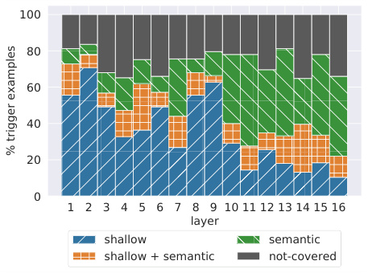
100
80
60
40
20
0
1 2 3 4 5 6 7 8 9 10 11 12 13 14 15 16
layer
shallow semantic
shallow + semantic not-covered
% trigger examples
Figure ~~2: Break~~ down of the labels experts assigned to trigger examples in each layer. Some examples were not associated with any pattern (“not-covered”).
were drawn at random) (b) describe each recognized pattern, and (c) classify each recognized pattern as “shallow” (e.g. recurring n-grams) or “semantic” (recurring topic). Each key and its corresponding top-25 prefixes were annotated by one expert. To assure that every pattern is grounded in at least 3 prefixes, we instruct the experts to specify, for each of the top-25 prefixes, which pattern(s) it contains. A prefix may be associated with multiple (shallow or semantic) patterns.
Table 1 shows example patterns. A fullyannotated example of the top-25 prefixes from a single memory key is shown in Appendix A.
3.2 Results
Memories are associated with humanrecognizable patterns Experts were able to identify at least one pattern for every key, with an average of 3.6 identified patterns per
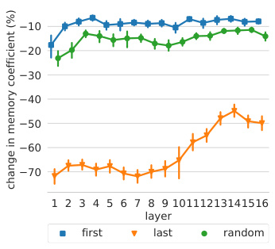
10
20
30
40
50
60
70
1 2 3 4 5 6 7 8 9 10111213141516
layer
first last random
change in memory coefficient (%)
Figure 3: Relative change in memory coefficient caused by removing the first, the last, or a random token from the input.
key. Furthermore, the vast majority of retrieved prefixes (65%-80%) were associated with at least one identified pattern (Figure 2). Thus, the top examples triggering each key share clear patterns that humans can recognize.
Shallow layers detect shallow patterns Comparing the amount of prefixes associated with shallow patterns and semantic patterns (Figure 2), the lower layers (layers 1-9) are dominated by shallow patterns, often with prefixes that share the last word (e.g. k1 449in Table 1).In contrast, the upper layers (layers 10-16) are characterized by more semantic patterns, with prefixes from similar contexts but without clear surface-form similarities (e.g. k16 1935 in Table 1). This observation corroborates recent findings that lower (upper) layers in deep contextualized models encode shallow (semantic) features of the inputs (Peters et al., 2018; Jawahar et al., 2019; Liu et al., 2019).
To further test this hypothesis, we sample 1600 random keys (100 keys per layer) and apply local modifications to the top-50 trigger examples of every key. Specifically, we remove either the first , last , or a random token from the input, and measure how this mutation affects the memory coefficient. Figure 3 shows that the model considers the end of an example as more salient than the beginning for predicting the next token. In upper layers, removing the last token has less impact, supporting our conclusion that upper-layer keys are less correlated with shallow patterns.
4 Values Represent Distributions
After establishing that keys capture patterns in training examples, we turn to analyze the information
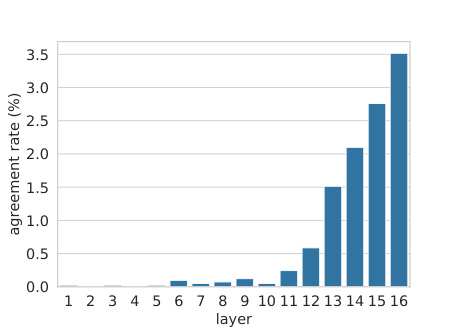
3.5
3.0
2.5
2.0
1.5
1.0
0.5
0.0
1 2 3 4 5 6 7 8 9 10 11 12 13 14 15 16
layer
agreement rate (%)
Figure 4: Agreement rate between the top-ranked token based on the value vector v iℓ, and the next token of the top-ranked trigger example associated with the key vector kℓ i.
stored in their corresponding values. We show that each value v i_ℓ_can be viewed as a distribution over the output vocabulary, and demonstrate that this distribution complements the patterns in the corresponding key kℓ iin the model’s upper layers (see Figure 1).
Casting values as distributions over the vocabulary. We begin by converting each value vector v i_ℓ_intoaprobabilitydistributionoverthevocab- ulary by multiplying it by the output embedding matrix E and applying a softmax:4
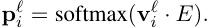
The probability distribution pℓ iisuncalibrated, since the value vector v i_ℓ_istypicallymultiplied by the input-dependent memory coefficient mℓ i, changing the skewness of the output distribution. That said, the ranking induced by pℓ iis invariant to the coefficient, and can still be examined. This conversion assumes (naïvely) that all model’s layers operate in the same embedding space.
Value predictions follow key patterns in upper layers. For every layer ℓ and memory dimension i , we compare the top-ranked token according to v iℓ, (argmax(pℓ i)) to the next tokenw i_ℓ_in the top- 1 trigger example according to kℓ i(theexample whose memory coefficient for kℓ iisthehighest). Figure 4 shows the agreement rate , i.e. the fraction of memory cells (dimensions) where the value’s top prediction matches the key’s top trigger example (argmax( pℓ i)=w iℓ).Itcanbeseenthatthe
4This is a simplification; in practice, we use the adaptive softmax (Baevski and Auli, 2019) to compute probabilities.
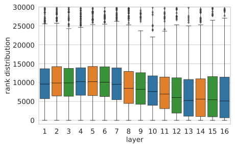
30000
25000
20000
15000
10000
5000
0
1 2 3 4 5 6 7 8 9 10 11 12 13 14 15 16
layer
rank distribution
Figure 5: Distribution of the rank of the next-token in the top-1 trigger example of kℓ i(w iℓ),accordingtothe ranking induced by the value vector v iℓ.We cut the tail of the distribution, which stretches up to the vocabulary size ( ∼ 270K tokens).
agreement rate is close to zero in the lower layers (1-10), but starting from layer 11, the agreement rate quickly rises until 3.5%, showing higher agreement between keys and values on the identity of the top-ranked token. Importantly, this value is orders of magnitude higher than a random token prediction from the vocabulary, which would produce a far lower agreement rate (0 . 0004%), showing that upper-layer memories manifest non-trivial predictive power.
Next, we take the next token of kℓ i’s top-1 trig- ger example ( wiℓ),andfindwhereitranksinthe value vector’s distribution pℓ i.Figure 5 shows that the rank of the next token of a trigger example increases through the layers, meaning that wi_ℓ_tends to get higher probability in the upper layers.
Detecting predictive values. To examine if we can automatically detect values with high agreement rate, we analyze the probability of the values’ top prediction, i.e., (max( pℓ i)).Figure6shows that although these distributions are not calibrated, distributions with higher maximum probabilities are more likely to agree with their key’s top trigger example. We then take the 100 values with highest probability across all layers and dimensions (97 out of the 100 are in the upper layers, 11-16), and for each value v iℓ,analyze the top-50 trigger ex- amples of kℓ i.Wefindthatinalmosthalfofthe values (46 out of 100), there is at least one trigger example that agrees with the value’s top prediction. Examples are provided in Table 2.
Discussion. When viewed as distributions over the output vocabulary, values in the upper layers tend to assign higher probability to the next-
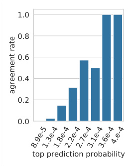
1.0
0.8
0.6
0.4
0.2
0.0
top prediction probability
8.9e-51.3e-41.8e-42.2e-42.7e-43.1e-43.6e-44.e-4
agreement rate
Figure 6: Agreement rate (between the top-ranked token based on the value vector v i_ℓ_andthenexttoken of the top-ranked trigger example associated with the key vector kℓ i) as a function of the maximal probability assigned by the value vector.
token of examples triggering the corresponding keys. This suggests that memory cells often store information on how to directly predict the output (the distribution of the next word) from the input (patterns in the prefix). Conversely, the lower layers do not exhibit such clear correlation between the keys’ patterns and the corresponding values’ distributions. A possible explanation is that the lower layers do not operate in the same embedding space, and therefore, projecting values onto the vocabulary using the output embeddings does not produce distributions that follow the trigger examples. However, our results imply that some intermediate layers do operate in the same or similar space to upper layers (exhibiting some agreement), which in itself is non-trivial. We leave further exploration of this phenomenon to future work.
5 Aggregating Memories
So far, our discussion has been about the function of a single memory cell in feed-forward layers. How does the information from multiple cells in multiple layers aggregate to form a model-wide prediction? We show that every feed-forward layer combines multiple memories to produce a distribution that is qualitatively different from each of its component memories’ value distributions (Section 5.1). These layer-wise distributions are then combined via residual connections in a refinement process, where each feed-forward layer updates the residual’s distribution to finally form the model’s output (Section 5.2).
| Value | Prediction | Precision@50 | Trigger example |
|---|---|---|---|
| v15 222 |
each | 68% | But when bees and wasps resemble each |
| v16 752 |
played | 16% | Her first role was in Vijay Lalwani’s psychological thriller Karthik Calling Karthik, where Padukone was cast as the supportive girlfriend of a depressed man (played |
| v13 2601 |
extratropical | 4% | Most of the winter precipitation is the result of synoptic scale, low pressure weather systems (large scale storms such as extratropical |
| v15 881 |
part | 92% | Comet served only briefly with the fleet, owing in large part |
| v16 2070 |
line | 84% | Sailing from Lorient in October 1805 with one ship of the line |
| v12 3186 |
jail | 4% | On May 11, 2011, four days after scoring 6 touchdowns for the Slaughter, Grady was sentenced to twenty days in jail |
Table 2: Example values, their top prediction, the fraction of their key’s top-50 trigger examples that agree with their prediction, and a matching trigger example (with the target token marked in blue).
5.1 Intra-Layer Memory Composition
The feed-forward layer’s output can be defined as the sum of value vectors weighted by their memory coefficients, plus a bias term:
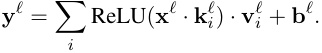
If each value vector v i_ℓ_contains information about the target token’s distribution, how is this information aggregated into a single output distribution? To find out, we analyze the behavior of 4,000 randomly-sampled prefixes from the validation set. Here, the validation set is used (rather than the training set used to find trigger examples) since we are trying to characterize the model’s behavior at inference time, not find the examples it “memorizes” during training.
We first measure the fraction of “active” memories (cells with a non-zero coefficient). Figure 7 shows that a typical example triggers hundreds of memories per layer (10%-50% of 4096 dimensions), but the majority of cells remain inactive. Interestingly, the number of active memories drops towards layer 10, which is the same layer in which semantic patterns become more prevalent than shallow patterns, according to expert annotations (see Section 3, Figure 2).
While there are cases where a single memory cell dominates the output of a layer, the majority of outputs are clearly compositional. We count the number of instances where the feed-forward layer’s top prediction is different from all of the memories’ top predictions. Formally, we denote:
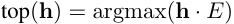
as a generic shorthand for the top prediction from the vocabulary distribution induced by the vector
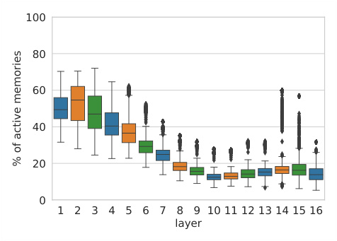
100
80
60
40
20
0
1 2 3 4 5 6 7 8 9 10 11 12 13 14 15 16
layer
% of active memories
Figure 7: The fraction of active memories (i.e., with positive memory coefficient) out of 4096 memories in every layer, for a random sample of 4,000 examples.
h , and compute the number of examples where the following condition holds:
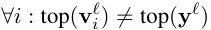
Figure 8 shows that, for any layer in the network, the layer’s final prediction is different than every one of the memories’ predictions in at least ∼ 68% of the examples. Even in the upper layers, where the memories’ values are more correlated with the output space (Section 4), the layer-level prediction is typically not the result of a single dominant memory cell, but a composition of multiple memories.
We further analyze cases where at least one memory cell agrees with the layer’s prediction, and find that (a) in 60% of the examples the target token is a common stop word in the vocabulary (e.g. “the” or “of” ), and (b) in 43% of the cases the input prefix has less than 5 tokens. This suggests that very common patterns in the training data might
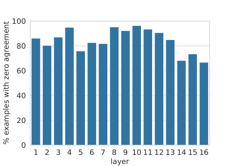
100
80
60
40
20
0
1 2 3 4 5 6 7 8 9 10 11 12 13 14 15 16
layer
% examples with zero agreement
Figure 8: The fraction of examples in a random sample of 4,000 examples where the layer’s prediction is different from the prediction of all of its memories.
be “cached” in individual memory cells, and do not require compositionality.
5.2 Inter-Layer Prediction Refinement
While a single feed-forward layer composes its memories in parallel, a multi-layer model uses the residual connection r to sequentially compose predictions to produce the model’s final output:5
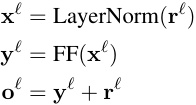
We hypothesize that the model uses the sequential composition apparatus as a means to refine its prediction from layer to layer, often deciding what the prediction will be at one of the lower layers.
To test our hypothesis, we first measure how often the probability distribution induced by the residual vector rℓ matches the model’s final output oL ( L being the total number of layers):
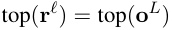
Figure 9 shows that roughly a third of the model’s predictions are determined in the bottom few layers. This number grows rapidly from layer 10 onwards, implying that the majority of “hard” decisions occur before the final layer.
We also measure the probability mass p that each layer’s residual vector rℓ assigns to the model’s
5The residual propagates information from previous layers, including the transformer’s self-attention layers.
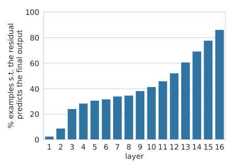
100
80
60
40
20
0
1 2 3 4 5 6 7 8 9 10 11 12 13 14 15 16
layer
predicts the final output
% examples s.t. the residual
Figure 9: Fraction of examples in each layer, where the residual’s top prediction matches the model’s output.
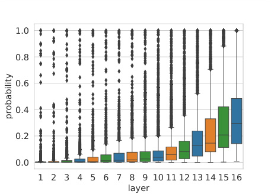
1.0
0.8
0.6
0.4
0.2
0.0
1 2 3 4 5 6 7 8 9 10 11 12 13 14 15 16
layer
probability
Figure 10: Probability of the token output by the model according to the residual of each layer.
final prediction:
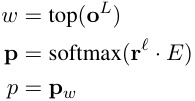
Figure 10 shows a similar trend, but emphasizes that it is not only the top prediction’s identity that is refined as we progress through the layers, it is also the model’s confidence in its decision.
To better understand how the refinement process works at each layer, we measure how often the residual’s top prediction changes following its interaction with the feed-forward layer (top( rℓ ) ̸ = top( oℓ )), and whether this change results from the feed-forward layer overriding the residual (top( oℓ ) = top( yℓ )) or from a true composition (top( rℓ ) ̸ = top( oℓ ) ̸ = top( yℓ )).
Figure 11 shows the breakdown of different cases per layer. In the vast majority of examples, the residual’s top prediction ends up being the
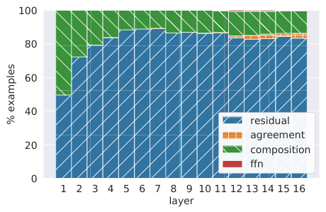
100
80
60
40
residual
agreement
20 composition
ffn
0
1 2 3 4 5 6 7 8 9 10 11 12 13 14 15 16
layer
% examples
Figure 11: Breakdown of examples by prediction cases: the layer’s output prediction matches the residual’s prediction ( residual ), matches the feed-forward layer’s prediction ( ffn ), matches both of the predictions ( agreement ), or none of the predictions ( composition ). By construction, there are no cases where the residual’s prediction matches the feed-forward layer’s prediction and does not match the output’s prediction.
model’s prediction ( residual+agreement ). In most of these cases, the feed forward layer predicts something different ( residual ). Perhaps surprisingly, when the residual’s prediction does change ( composition+ffn ), it rarely changes to the feed-forward layer’s prediction ( ffn ). Instead, we observe that composing the residual’s distribution with that of the feed-forward layer produces a “compromise” prediction, which is equal to neither ( composition ). This behavior is similar to the intra-layer composition we observe in Section 5.1. A possible conjecture is that the feed-forward layer acts as an elimination mechanism to “veto” the top prediction in the residual, and thus shifts probability mass towards one of the other candidate predictions in the head of the residual’s distribution.
Finally, we manually analyze 100 random cases of last-layer composition, where the feed-forward layer modifies the residual output in the final layer. We find that in most cases (66 examples), the output changes to a semantically distant word (e.g., “people” → “same” ) and in the rest of the cases (34 examples), the feed-forward layer’s output shifts the residual prediction to a related word (e.g. “later” → “earlier” and “gastric” → “stomach” ). This suggests that feed-forward layers tune the residual predictions at varying granularity, even in the last layer of the model.
6 Related Work
Considerable attention has been given to demystifying the operation of neural NLP models. An
extensive line of work targeted neuron functionality in general, extracting the properties that neurons and subsets of neurons capture (Durrani et al., 2020; Dalvi et al., 2019; Rethmeier et al., 2020; Mu and Andreas, 2020; Vig et al., 2020), regardless of the model architecture or neurons’ position in it. Jacovi et al. (2018) analyzed CNN architectures in text classification and showed that they extract key n-grams from the inputs.
The study of the transformer architecture has focused on the role and function of self-attention layers (Voita et al., 2019; Clark et al., 2019; Vig and Belinkov, 2019) and on inter-layer differences (i.e. lower vs. upper layers) (Tenney et al., 2019; Jawahar et al., 2019). Previous work also highlighted the importance of feed-forward layers in transformers (Press et al., 2020; Pulugundla et al., 2021; Xu et al., 2020). Still, to date, the role of feed-forward layers remains under-explored.
Also related are interpretability methods that explain predictions (Han et al., 2020; Wiegreffe and Pinter, 2019), however, our focus is entirely different: we do not interpret individual predictions, but aim to understand the mechanism of transformers.
Characterizing the functionality of memory cells based on examples that trigger maximal activations has been used previously in NLP (Rethmeier et al., 2020) and vision (Erhan et al., 2009).
7 Discussion and Conclusion
Understanding how and why transformers work is crucial to many aspects of modern NLP, including model interpretability, data security, and development of better models. Feed-forward layers account for most of a transformer’s parameters, yet little is known about their function in the network.
In this work, we propose that feed-forward layers emulate key-value memories, and provide a set of experiments showing that: (a) keys are correlated with human-interpretable input patterns; (b) values, mostly in the model’s upper layers, induce distributions over the output vocabulary that correlate with the next-token distribution of patterns in the corresponding key; and (c) the model’s output is formed via an aggregation of these distributions, whereby they are first composed to form individual layer outputs, which are then refined throughout the model’s layers using residual connections.
Our findings open important research directions:
- Layer embedding space. We observe a correlation between value distributions over the output
vocabulary and key patterns, that increases from lower to upper layers (Section 4). Is this because the layer’s output space transforms across layers? If so, how? We note that this possible transformation cannot be explained solely by the function of feed-forward layers: if the model only did a series of key-value look-ups and value-distribution aggregation via weighted addition, then a single, unifying embedding space would appear more natural. Thus, the transformation might have to do with the interplay between feed-forward layers and self-attention layers.
-
Beyond language modeling. Our formulation of feed-forward networks as key-value memories generalizes to any transformer model, e.g. BERT encoders and neural translation models. We thus expect our qualitative empirical observations to hold across diverse settings, and leave verification of this for future work.
-
Practical implications. A better understanding of feed-forward layers has many implications in NLP. For example, future studies may offer interpretability methods by automating the patternidentification process; memory cells might affect training-data privacy as they could facilitate white-box membership inference (Nasr et al., 2019); and studying cases where a correct pattern is identified but then suppressed during aggregation may guide architectural novelties.
Thus, by illuminating the role of feed-forward layers, we move towards a better understanding of the inner workings of transformers, and open new research threads on modern NLP models.
Acknowledgements
We thank Shimi Salant and Tal Schuster for helpful feedback. This work was supported in part by the Yandex Initiative for Machine Learning, the Blavatnik Interdisciplinary Cyber Research Center (ICRC), the Alon Scholarship, and Intel Corporation. Roei Schuster is a member of the Check Point Institute of Information Technology. This work was completed in partial fulfillment for the Ph.D degree of Mor Geva.
References
- Alexei Baevski and Michael Auli. 2019. Adaptive input representations for neural language modeling. In
International Conference on Learning Representations (ICLR) .
-
Tom B Brown, Benjamin Mann, Nick Ryder, Melanie Subbiah, Jared Kaplan, Prafulla Dhariwal, Arvind Neelakantan, Pranav Shyam, Girish Sastry, Amanda Askell, Sandhini Agarwal, Ariel Herbert-Voss, Gretchen Krueger, Tom Henighan, Rewon Child, Aditya Ramesh, Daniel M Ziegler, Jeffrey Wu, Clemens Winter, Christopher Hesse, Mark Chen, Eric Sigler, Mateusz Litwin, Scott Gray, Benjamin Chess, Jack Clark, Christopher Berner, Sam McCandlish, Alec Radford, Ilya Sutskever, and Dario Amodei. 2020. Language models are few-shot learners. In Proceedings of Neural Information Processing Systems (NeurIPS) .
-
Kevin Clark, Urvashi Khandelwal, Omer Levy, and Christopher D. Manning. 2019. What does BERT look at? An analysis of BERT’s attention. In BlackBoxNLP Workshop at ACL .
-
Fahim Dalvi, Nadir Durrani, Hassan Sajjad, Yonatan Belinkov, Anthony Bau, and James Glass. 2019. What is one grain of sand in the desert? analyzing individual neurons in deep nlp models. In Proceedings of the AAAI Conference on Artificial Intelligence , volume 33, pages 6309–6317.
-
Jacob Devlin, Ming-Wei Chang, Kenton Lee, and Kristina Toutanova. 2019. BERT: Pre-training of deep bidirectional transformers for language understanding. In North American Association for Computational Linguistics (NAACL) , pages 4171–4186, Minneapolis, Minnesota.
-
Nadir Durrani, Hassan Sajjad, Fahim Dalvi, and Yonatan Belinkov. 2020. Analyzing individual neurons in pre-trained language models. In Proceedings of the 2020 Conference on Empirical Methods in Natural Language Processing (EMNLP) .
-
Dumitru Erhan, Yoshua Bengio, Aaron Courville, and Pascal Vincent. 2009. Visualizing higher-layer features of a deep network. University of Montreal , 1341(3):1.
-
Xiaochuang Han, Byron C. Wallace, and Yulia Tsvetkov. 2020. Explaining black box predictions and unveiling data artifacts through influence functions. In Proceedings of the 58th Annual Meeting of the Association for Computational Linguistics , pages 5553–5563, Online. Association for Computational Linguistics.
-
Alon Jacovi, Oren Sar Shalom, and Yoav Goldberg. 2018. Understanding convolutional neural networks for text classification. In Proceedings of the 2018 EMNLP Workshop BlackboxNLP: Analyzing and Interpreting Neural Networks for NLP , pages 56–65, Brussels, Belgium. Association for Computational Linguistics.
-
Ganesh Jawahar, Benoît Sagot, and Djamé Seddah. 2019. What does BERT learn about the structure
- of language? In Proceedings of the 57th Annual Meeting of the Association for Computational Linguistics , pages 3651–3657, Florence, Italy. Association for Computational Linguistics.
-
Nelson F. Liu, Matt Gardner, Yonatan Belinkov, Matthew E. Peters, and Noah A. Smith. 2019. Linguistic knowledge and transferability of contextual representations. In Proceedings of the 2019 Conference of the North American Chapter of the Association for Computational Linguistics: Human Language Technologies, Volume 1 (Long and Short Papers) , pages 1073–1094, Minneapolis, Minnesota. Association for Computational Linguistics.
-
Stephen Merity, Caiming Xiong, James Bradbury, and Richard Socher. 2017. Pointer sentinel mixture models. International Conference on Learning Representations (ICLR) .
-
Jesse Mu and Jacob Andreas. 2020. Compositional explanations of neurons. In Proceedings of Neural Information Processing Systems (NeurIPS) .
-
Milad Nasr, Reza Shokri, and Amir Houmansadr. 2019. Comprehensive privacy analysis of deep learning: Passive and active white-box inference attacks against centralized and federated learning. In 2019 IEEE Symposium on Security and Privacy (SP) , pages 739–753.
-
Matthew Peters, Mark Neumann, Mohit Iyyer, Matt Gardner, Christopher Clark, Kenton Lee, and Luke Zettlemoyer. 2018. Deep contextualized word representations. In North American Chapter of the Association for Computational Linguistics (NAACL) .
-
Ofir Press, Noah A. Smith, and Omer Levy. 2020. Improving transformer models by reordering their sublayers. In Proceedings of the 58th Annual Meeting of the Association for Computational Linguistics , pages 2996–3005, Online. Association for Computational Linguistics.
-
Ian Tenney, Dipanjan Das, and Ellie Pavlick. 2019. BERT rediscovers the classical NLP pipeline. In Proceedings of the 57th Annual Meeting of the Association for Computational Linguistics , pages 4593– 4601, Florence, Italy. Association for Computational Linguistics.
-
Ashish Vaswani, Noam Shazeer, Niki Parmar, Jakob Uszkoreit, Llion Jones, Aidan N Gomez, Łukasz Kaiser, and Illia Polosukhin. 2017. Attention is all you need. In Advances in Neural Information Processing Systems (NIPS) , pages 5998–6008.
-
Jesse Vig and Yonatan Belinkov. 2019. Analyzing the structure of attention in a transformer language model. In Proceedings of the 2019 ACL Workshop BlackboxNLP: Analyzing and Interpreting Neural Networks for NLP , pages 63–76, Florence, Italy. Association for Computational Linguistics.
-
Jesse Vig, Sebastian Gehrmann, Yonatan Belinkov, Sharon Qian, Daniel Nevo, Yaron Singer, and Stuart Shieber. 2020. Investigating gender bias in language models using causal mediation analysis. Advances in Neural Information Processing Systems , 33.
-
Elena Voita, David Talbot, Fedor Moiseev, Rico Sennrich, and Ivan Titov. 2019. Analyzing multi-head self-attention: Specialized heads do the heavy lifting, the rest can be pruned. In Proceedings of the 57th Annual Meeting of the Association for Computational Linguistics .
-
Sarah Wiegreffe and Yuval Pinter. 2019. Attention is not not explanation. In Proceedings of the 2019 Conference on Empirical Methods in Natural Language Processing and the 9th International Joint Conference on Natural Language Processing (EMNLPIJCNLP) , pages 11–20, Hong Kong, China. Association for Computational Linguistics.
-
Hongfei Xu, Qiuhui Liu, Deyi Xiong, and Josef van Genabith. 2020. Transformer with depth-wise lstm. arXiv preprint arXiv:2007.06257 .
-
-
Bhargav Pulugundla, Yang Gao, Brian King, Gokce Keskin, Harish Mallidi, Minhua Wu, Jasha Droppo, and Roland Maas. 2021. Attention-based neural beamforming layers for multi-channel speech recognition. arXiv preprint arXiv:2105.05920 .
-
Nils Rethmeier, Vageesh Kumar Saxena, and Isabelle Augenstein. 2020. Tx-ray: Quantifying and explaining model-knowledge transfer in (un-) supervised nlp. In Conference on Uncertainty in Artificial Intelligence , pages 440–449. PMLR.
-
S. Sukhbaatar, J. Weston, and R. Fergus. 2015. Endto-end memory networks. In Advances in Neural Information Processing Systems (NIPS) .
-
Sainbayar Sukhbaatar, Edouard Grave, Guillaume Lample, Herve Jegou, and Armand Joulin. 2019. Augmenting self-attention with persistent memory. arXiv preprint arXiv:1907.01470 .
A Pattern Analysis
Table 3 provides a fully-annotated example of 25 prefixes from the memory cell k5 895.
B Implementation details
In this section, we provide further implementation details for reproducibility of our experiments.
For all our experiments, we used the language model of Baevski and Auli (2019) (247M parameters) trained on WikiText-103 (Merity et al., 2017). Specifically, we used the model transformer_lm.wiki103.adaptive trained with the fairseq toolkit6 .
WikiText-1037 is a well known language modeling dataset and a collection of over 100M tokens extracted from Wikipedia. We used spaCy8 to split examples into sentences (Section 3).
6https://github.com/pytorch/fairseq
7https://blog.einstein.ai/the-
wikitext-long-term-dependency-languagemodeling-dataset/ 8https://spacy.io/
| 1 | It requiresplayers topress |
|---|---|
| 1 | The video begins at apress |
| 1 | The firstplayer wouldpress |
| 1 | Ivy,disguised as her former self,interrupts a Wayne Enterprisespress |
| 1 | The video then cuts back to thepress |
| 1 | Theplayer is able topress |
| Leto switched | |
| 1 | In the Nintendo DS version,theplayer can choose topress |
| 1 | In-house engineer Nick Robbins said Shields made it clear from the outset that he(Robbins)“wasjust there topress |
| 1 | She decides not topress |
| 1 | she decides not topress |
| 1 | OriginallyWatson signaled electronically,but show staff requested that itpress |
| 1 | Atpost-gamepress |
| 1 | In the buildupto thegame,thepress |
| 2 | Hard togo back to thegame after that news |
| 1 | Inpost-trailer interviews,Bungie staff members toldgaming press |
| Space Gun was well received bythe videogame | |
| 1 | As BongLoad struggled topress |
| At Michigan,Clancystarted as aquarterback,switched | |
| 1 | Crush used his size advantage toperform a Gorillapress |
| 1,2 | Groeningtold thepress |
| 1 | Creative director Gregoire |
| 1,2 | Mattinglywould be named most outstanding player thatyear bythepress |
| 1 | At thepost-matchpress |
| 1,2 | The companyreceives badpress |
| ID Description shallow / semantic |
|
| 1 Ends with the word “press” shallow |
|
| 2 Press/news related semantic |
Table 3: A pattern annotation of trigger examples for the cell memory k5 895.Trigger examples are annotated with repetitive patterns (upper table), which are classified as “shallow” or “semantic” (bottom table).